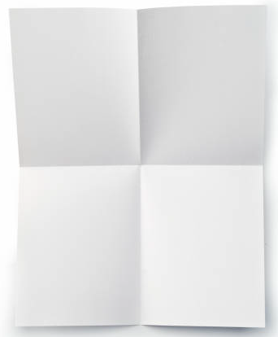

Problem
Fold a piece of paper in half. Unfold it and count the number of rectangles you created. Write your answer in the table below.
Now refold the paper in half, and then fold it in half again. Unfold it, count the rectangles, and write your answer in the table.
Repeat with 3 folds, and then with 4 folds, filling in the table as you go.
Keep trying for as many folds as you can, counting the number of rectangles with each fold.
Tissue paper works best for this activity. Any size is fine, but it should be rectangular.
Number of Folds Number of Rectangles 1 2 3 4 5 6 7 
Write a pattern rule for how the number of rectangles is changing.
Using your pattern rule, predict how many rectangles you would get if you could do 8 folds.
Solution
The completed table is shown below.
Number of Folds Number of Rectangles 1 2 2 4 3 8 4 16 5 32 6 64 7 128 The number of rectangles starts with 2 and doubles each time. So the rule is \[\text{number of rectangles} = \text{previous number of rectangles} \times 2\] You could also write this rule using variables. Let \(n\) be the number of rectangles and \(p\) be the previous number of rectangles. Then the pattern rule would be \(n=p \times 2\).
Since the number of rectangles doubles after every fold, after 8 folds there will be \(128 \times 2 = 256\) rectangles.